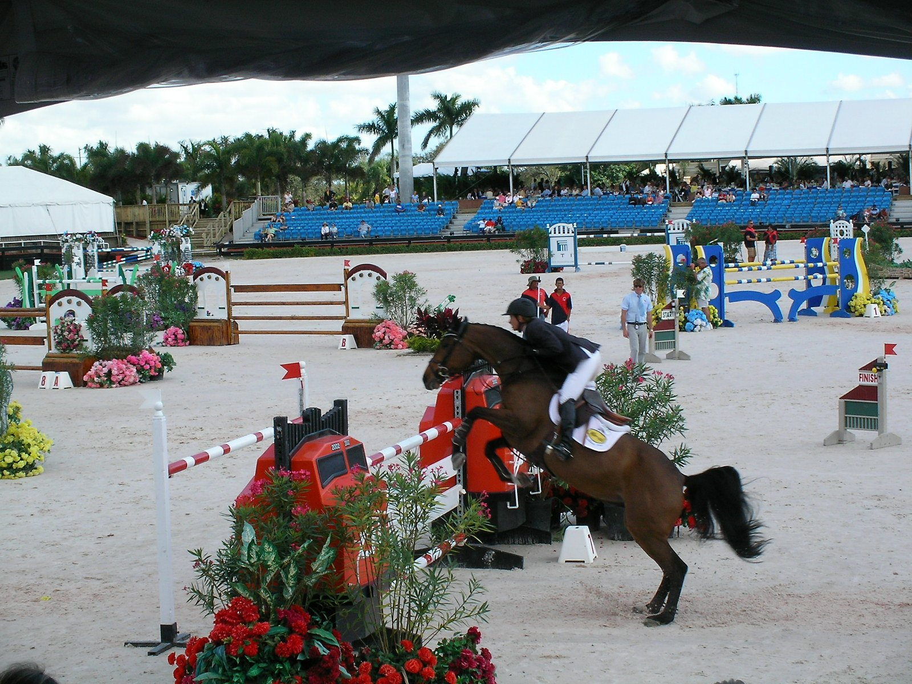

España llega a la Copa de Naciones de Rabat con Aresu y Elorduy en el equipo
España afronta el CSIO4*-W de Rabat, que se disputa del 7 al 11 de octubre, con un equipo distinto al anunciado a mediados de septiembre. La Real Federación Hípica Española actualizó la convocatoria y metió en el cuarteto a Carolina Aresu García Obregón y Pello Elorduy Ibarzabal.

Foto: jrubinic · CC BY 2.0
España afronta el CSIO4*-W de Rabat, que se disputa del 7 al 11 de octubre, con un equipo distinto al anunciado a mediados de septiembre. La Real Federación Hípica Española actualizó la convocatoria y metió en el cuarteto a Carolina Aresu García Obregón y Pello Elorduy Ibarzabal.
Los cambios afectan a dos plazas. Sira Martínez Cullell e Imma Roquet Autonell dejan el equipo, y José Bono Rodríguez sale del grupo de individuales. Aresu, que en la primera lista iba a título individual, sube al equipo; Elorduy entra nuevo.
El cuarteto queda así:
- Carolina Aresu García Obregón, con Chernesto y Domperignon.
- Bautista Rodríguez Debray, con Goliath d'Elbe, H'Inextenso des Lines y Vivoulette HD.
- Pello Elorduy Ibarzabal, con Champenoise de Rampan y Emir de Burgo.
- Armando Trapote Mariscal, con Caep't N Hook y Karl P, los dos caballos que ya figuraban en la convocatoria inicial.
Dos amazonas completan la expedición a título individual: Uxue Arruza Rodríguez, con Hit Rock de Bornival Z, y Carolina Villanueva Suárez, con Embassy du Chateau.
La federación avisó de que la composición todavía podía cambiar por motivos deportivos o técnicos, con el 7 de octubre como último día para sustituciones.
La Copa de Naciones del Morocco Royal Tour se salta el domingo 11, sobre 1,50 m, con 100.000 euros en juego. Francia, Alemania, Gran Bretaña, Irlanda, Italia, Suiza, Bélgica, Brasil, Países Bajos y la anfitriona Marruecos figuran entre los equipos inscritos.
— Redacción de Hípica al Día